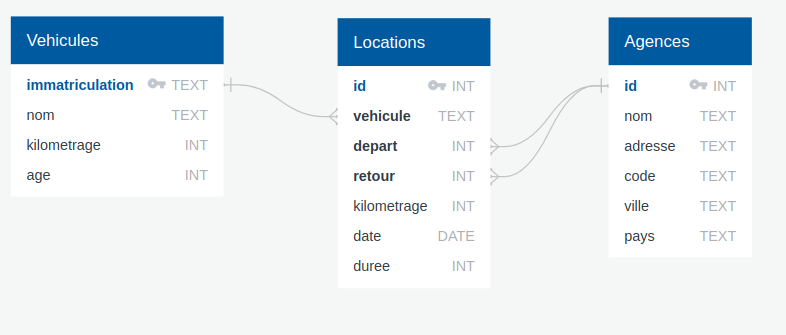
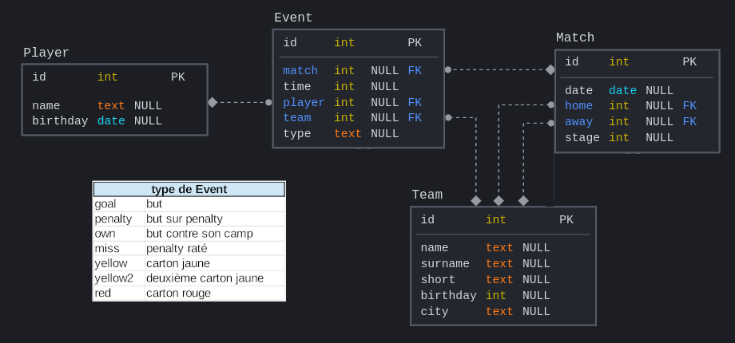

TD04 : Découverte du langage SQL⚓︎


Exercice 1
Questions interactives à réaliser sur le site SQLzoo.net.
Faire les questions de 1 à 10.
Correction
Corrections extraites du dépôt https://github.com/jisaw/sqlzoo-solutions.
/*
Third section of sqlzoo, SELECT from Nobel
*/
--#1
/*
Change the query shown so that it displays Nobel prizes for 1950.
*/
SELECT yr, subject, winner
FROM nobel
WHERE yr = 1950
--#2
/*
Show who won the 1962 prize for Literature.
*/
SELECT winner
FROM nobel
WHERE yr = 1962 AND subject = 'Literature'
--#3
/*
Show the year and subject that won 'Albert Einstein' his prize.
*/
SELECT yr, subject
FROM nobel
WHERE winner = 'Albert Einstein'
--#4
/*
Give the name of the 'Peace' winners since the year 2000, including 2000.
*/
SELECT winner
FROM nobel
WHERE subject = 'Peace' AND yr >= 2000
--#5
/*
Show all details (yr, subject, winner) of the Literature prize winners for 1980 to 1989 inclusive
*/
SELECT yr, subject, winner
FROM nobel
WHERE (yr >=1980 AND yr <=1989) AND subject = 'Literature'
--#6
/*
Show all details of the presidential winners:
Theodore Roosevelt
Woodrow Wilson
Jimmy Carter
*/
SELECT *
FROM nobel
WHERE winner IN ('Theodore Roosevelt', 'Woodrow Wilson', 'Jimmy Carter')
--#7
/*
Show the winners with first name John
*/
SELECT winner
FROM nobel
WHERE winner LIKE 'john%'
--#8
/*
Show the Physics winners for 1980 together with the Chemistry winners for 1984.
*/
SELECT *
FROM nobel
WHERE (subject = 'Physics' AND yr = '1980') OR (subject = 'Chemistry' AND yr = 1984)
--#9
/*
Show the winners for 1980 excluding the Chemistry and Medicine
*/
SELECT *
FROM nobel
WHERE yr = 1980 AND subject NOT IN ('Chemistry', 'Medicine')
--#10
/*
Show who won a 'Medicine' prize in an early year (before 1910, not including 1910) together with winners of a 'Literature' prize in a later year (after 2004, including 2004)
*/
SELECT *
FROM nobel
WHERE (subject = 'Medicine' AND yr < 1910) OR (subject = 'Literature' AND yr >= 2004)
--#11
/*
Find all details of the prize won by PETER GRÜNBERG
*/
SELECT *
FROM nobel
WHERE winner LIKE 'peter gr%nberg'
--#12
/*
Find all details of the prize won by EUGENE O'NEILL
*/
SELECT *
FROM nobel
WHERE winner = 'Eugene O''Neill'
--#13
/*
Knights in order
List the winners, year and subject where the winner starts with Sir. Show the the most recent first, then by name order.
*/
SELECT winner, yr, subject
FROM nobel
WHERE winner LIKE 'sir%'
ORDER BY yr DESC, winner
--#14
/*
The expression subject IN ('Chemistry','Physics') can be used as a value - it will be 0 or 1.
Show the 1984 winners ordered by subject and winner name; but list Chemistry and Physics last.
*/
SELECT winner, subject, subject IN ('Physics','Chemistry')
FROM nobel
WHERE yr=1984
ORDER BY subject IN ('Physics','Chemistry'),subject,winner
Exercice 2
Cet exercice en ligne (que vous pouvez retrouver ici, mais on peut le faire en restant sur cette page) est proposé le Knight Lab de l'université américaine Northwerstern University.

Le point de départ de l'histoire : un meurtre a été commis dans la ville de SQL City le 15 janvier 2018.
À partir de ce point de départ et d'une base de données dont le diagramme est donné ci-dessous, il s'agit de trouver le meurtrier.

Zone d'enquête (à coups de requêtes)
Il est conseillé de travailler avec un Bloc-Notes ouvert à côté afin d'y coller les renseignements obtenus.
Vous pensez avoir trouvé le meurtrier ?
Copiez la requête
INSERT INTO solution VALUES (1, 'nom du meurtrier');
SELECT value FROM solution;
Sur la page officielle, vous pouvez être guidés étape par étape jusqu'à la recherche du meurtrier (qui n'est pas la fin de l'énigme !)
-
Vous pouvez si vous le souhaitez télécharger la base sql-murder-mystery.db.
-
Vous pouvez trouver des éléments de correction ici...
Exercice 3
Gestion d'un réseau d'agences de location de voitures.
D'après le travail de J. Le Coupanec (Académie de Rennes)
La base de données locations.db contient les tables Agences,Locations, Vehicules.

Questions sur la relation Agences
Q1. Visualisez toute la relation Agences
Q2. Listez uniquement les noms des agences et de leur ville.
Q3. Listez les noms des agences de la ville de Lorient
Q4. Listez les noms des agences du département du Morbihan (code postal 56***) ainsi que les codes postaux en utilisant par exemple un WHERE LIKE.
Questions sur la relation Vehicules
Q5. Déterminez le nombre de voitures que vous possédez.
Q6. Déterminez l'âge minimum et maximum de vos véhicules.
Q7. Quels sont la marque et le modèle de votre dernière acquisition qui date de trois mois ?
Q8. Quel est le kilométrage maximum des véhicules ?
Q9. Quel est le kilométrage moyen des véhicules ?
Q10. Afficher toute la flotte de véhicules par ordre décroissant de kilométrage.
Questions sur la relation Locations
Q11. Visualisez toute la relation Locations.
Q12. Déterminez le nombre de locations effectuées avec changement d'agence
Q13. Déterminez le nombre total de kilomètres effectués durant les locations
Q14. Listez toutes les locations en y associant les caractéristiques du véhicule
Q15. Affichez le nom et l'immatriculation du véhicule ainsi que la date de la location et le kilométrage réalisé pour chacune des locations
Q16. Affichez une seule fois le nom et l'immatriculation des véhicules ayant déjà été loués.
Q17. Affichez les locations du véhicule immatriculé AB-224-BA en précisant le nom de l'agence de départ ainsi que la ville de départ dans l'ordre chronologique des locations.
Exercice 4
Championnat de France de Football 2015-2016
D'après le travail de J. Le Coupanec (Académie de Rennes)
La base de données soccer.db contient les tables Team,Match, Event, Player.

Q1. Combien d'équipes ont participé à ce championnat ?
Q2. Listez les noms des clubs ainsi que leur date de création dans l'ordre chronologique de leur création.
Q3. Combien de pénaltys ont été marqués ?
Q4. Combien de pénaltys ont été sifflés ?
Q5. Combien de cartons ont été distribués ?
Q6. Combien de buts ont été marqués ?
Q7. Affichez tous les renseignements sur les 10 cartons rouges obtenus le plus rapidement pendant un match.
Q8. Donnez le nom du joueur qui a obtenu le carton rouge le plus rapidement.